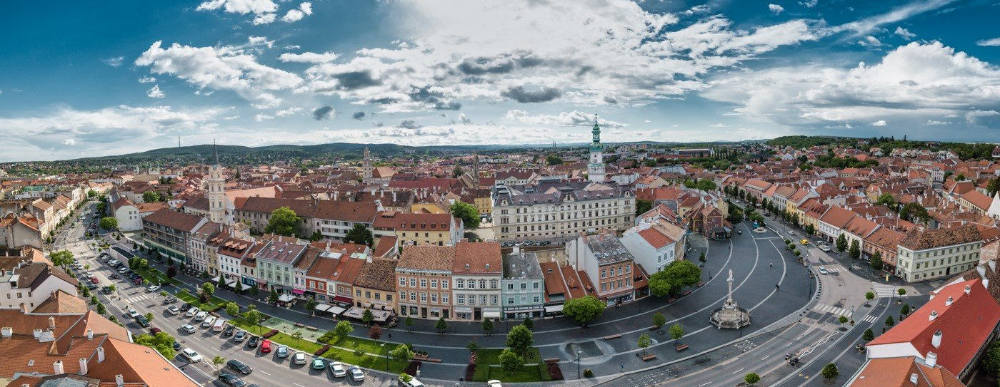

HOMETOWN
I was born in Sopron, a small town in Hungary near the Austrian border. I spent all of my 20 years here. I went to primary and secondary school here. Sopron is a place where Roman ruins and medieval city walls are a natural part of everyday life. I come home here every weekend for my family and the memories.
HIGH SCHOOL

My high school was a defining moment in my life, I had a 5-year education where IT was the focus. In all 5 years, in addition to regular high school subjects, I had a lot of IT-related classes, such as web and desktop application development, databases. My fifth year was all about software development, since I graduated in the fourth year.
FINAL PROJECT
At the end of the 5. years, we had to take a professional exam in high schools to get the software development technician certification. It was a multi-round exam, where one of our tasks was to create a full stack website in groups of three in 4 months. This was the biggest project I have ever participated in.